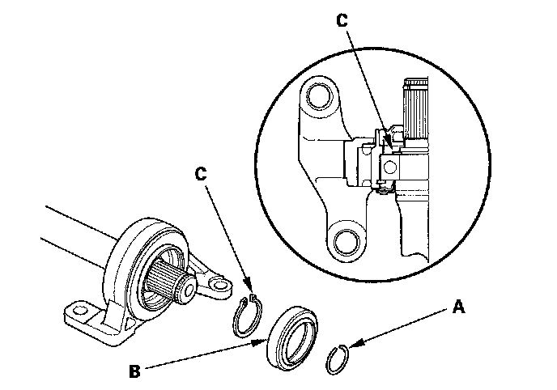
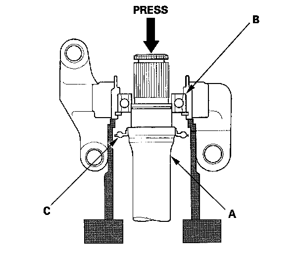
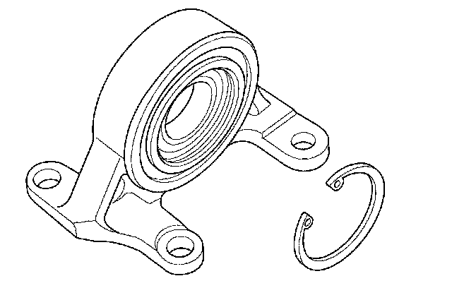
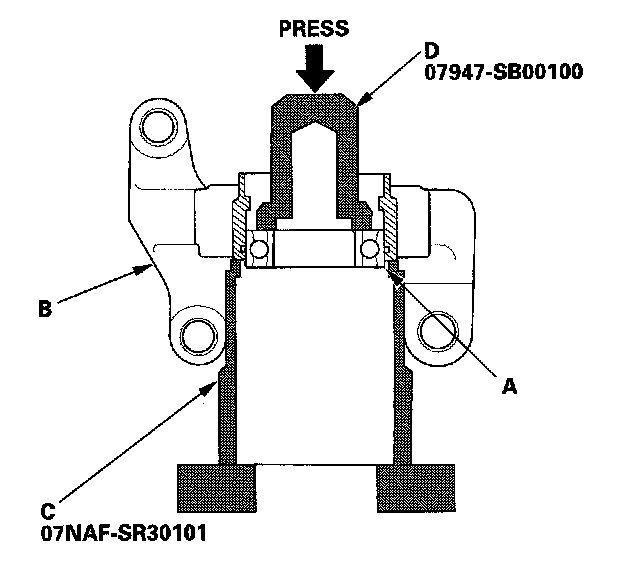
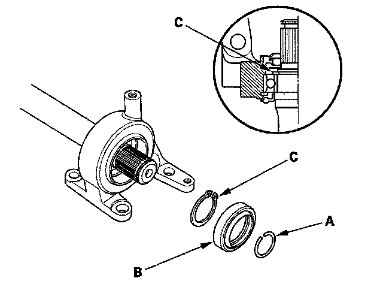
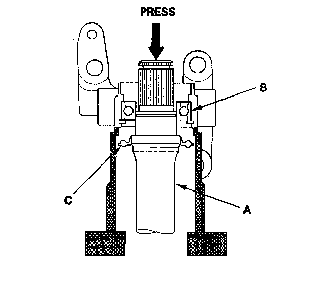
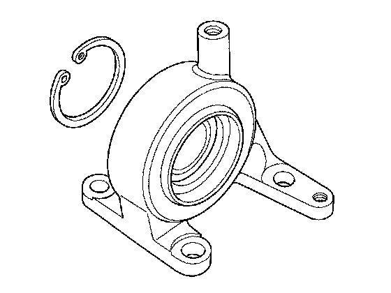
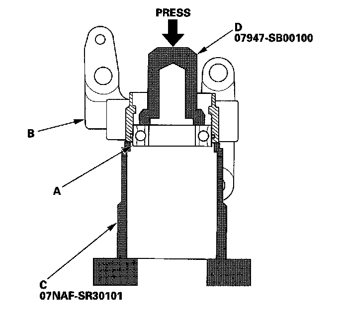

Intermediate Shaft Disassembly
Intermediate Shaft DisassemblySpecial Tools Required
^ Half shaft base 07NAF-SR30101
^ Oil seal driver 07947-SBOO100
5-speed M/T models (Except Si)
1. Remove the set ring (A), the outer seal (B), and the external snap ring (C).

2. Press the intermediate shaft (A) out of the intermediate shaft bearing (B) using a press. Be careful not to damage the bearing support ring (C) on the intermediate shaft during disassembly.

3. Remove the internal snap ring.

4. Press the intermediate shaft bearing (A) out of the bearing support (B) using the half shaft base (C), oil seal driver (D), and a press.

6-speed M/T model (Si)
1. Remove the set ring (A), the outer seal (B), and the external snap ring (C).

2. Press the intermediate shaft (A) out of the intermediate shaft bearing (B) using a press. Be careful not to damage the bearing support ring (C) on the intermediate shaft during disassembly.

3. Remove the internal snap ring.

4. Press the intermediate shaft bearing (A) out of the bearing support (B) using the half shaft base (C), oil seal driver (D) and a press.
